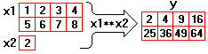
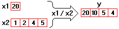
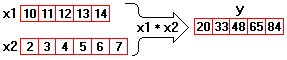
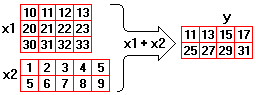
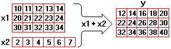

CalcExpress has polymorphism capabilities similar to LabVIEW. This topic describes the general rules for polymorphism that CalcExpress operators comply with. Also, most CalcExpress predefined numeric functions follow these same rules.
CalcExpress operators work on numeric data. Some operators can handle both real (DBL) and complex (CDB) numbers, while others only work with real numbers. A description of each operator has a list of data types it can operate. See Data Types topic for more information on supported data types.
Unary operators can operate on scalars, 1D arrays, and 2D arrays. Every unary operator produces a value with the same data type as its operand. If an operand is an array, an unary operator acts on each element of the array to produce a result that has the same dimensions and size as the operand.
If a binary operator can work on operands with different representations (DBL and CDB), the result has the widest representation of the operands. That is, combinations of DBL and CDB representable operands produce CDB representable result.
Binary operators can work on scalars, 1D arrays, 2D arrays, and any combinations thereof. Data type of resulting value depends on combination of the operand data types. Possible combinations of operand data types and the way of result computations are described below.
CalcExpress performs an operator on operands and produces a scalar value.
CalcExpress performs an operator on the scalar and each element of the array. A result is an array that has the same dimensionality and size(s) as the input array.
Example 1
|
tmp = vector(1,2,3,4); x1 = matrix(tmp, tmp+4); x2 = 2; y = x1 ** x2; |
 |
Example 2
|
x1 = 20; x2 = vector(1,2,4,5); y = x1 / x2; |
 |
CalcExpress performs an operator on the respective elements of the input arrays. A result is an array with the same dimensionality as the input arrays. The result has the same size(s) as input arrays, if their sizes are identical. If input 1D arrays have different sizes, the result has the same size as the smallest input array. If input 2D arrays have different number of rows, the result has number of rows that equals to the smallest number of rows in input arrays. If input 2D arrays have different number of columns, the result has number of columns that equals to the smallest number of columns in input arrays.
Example 1
|
x1 = nvecins(10,5,1); x2 = vector(2,3,4,5,6,7); y = x1 * x2; |
 |
Example 2
|
tmp = nvecins(10,4); x1 = matrix(tmp,tmp+10,tmp+20); tmp = nvecins(1,5); x2 = matrix(tmp,tmp+4); y = x1 + x2; |
 |
CalcExpress performs an operator on elements of the 1D Array and the respective elements of every row in the 2D Array. A result is 2D Array. It has the same number of rows as the input 2D Array. Number of columns is the smallest value among number of columns in the 2D Array and size of the 1D Array.
You can consider this situation like the following. An operator is performed on two 2D Arrays according to typical LabVIEW polymorphism rules, where the second (virtual) 2D Array has the same number of rows as the input 2D Array, and each its row is equal to the input 1D Array.
Example
|
x1 = nmtxins(10,3,10,5,1); x2 = vector(2,3,4,5,6,7); y = x1 + x2; |
 |